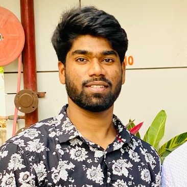

MD. Sohail Samad

Summary:
To achieve higher career growth through a continuous learning process and keep myself dynamic, visionary and competitive with the changing scenario of the world.
Education:
- B.tech in INFORMATION TECHNOLOGY - JNTUH university(2017-2021)
- Masters in ITPM - IWU (2023-2024)
Work Experience:
- Web developer - Infosys
- Prototyped average of 30 new product features a year.
- Raised UX scores by 35% over company's previous best.
- Full stack developer - Delloite
- Facilitated adoption of Agile development across 5 development teams. Increased employee buy-in for the program by 55%.
- Drove full-stack web development for 100% of client projects.
- Spearheaded end-to-end web development and cloud engineering. Directed two teams of four employees each.
skills:
- HTML
- CSS
- Javascript
- React JS
Awards:
- Webby Award for Technical Achievement.
Other: